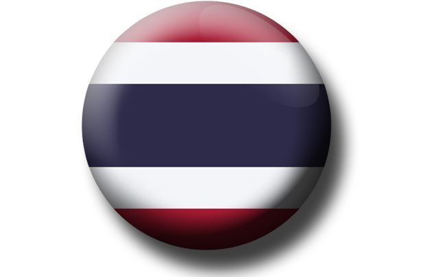

รูปแบบการปกครอง : ระบอบประชาธิปไตยแบบรัฐสภา 
วันชาติ : 5 ธันวาคม
ธงชาติไทย เรียกอีกอย่างหนึ่งว่า ธงไตรรงค์ มีลักษณะเป็นธงสี่เหลี่ยมผืนผ้า ใช้สี
หลักในธง 3 สี คือ สีแดง ขาว และน้ำเงิน ภายในแบ่งเป็นแถบ 5 แถบ แถบในสุด
สีน้ำเงิน ถัดมาด้านนอกทั้ง ด้านบนและล่างเป็นสีขาวและสีแดงตามล้าดับ
แถบสีน้ำเงินมีขนาดใหญ่กว่าแถบสีอื่นเป็น 2 เท่า ความหมายสำคัญของธงไตรรงค์นั้นหมายถึงสถาบันหลักทั้งสามของ
ประเทศไทย คือ
· ชาติ (สีแดง)
· ศาสนา (สีขาว)
· พระมหากษัตริย์ (สีน้ำเงิน)
สีทั้งสามนี้เองคือที่มาของการเรียกชื่อธงนี้ว่าธงไตรรงค์ (ไตร = สาม, รงค์ = สี) ในพระราชนิพนธ์
"เครื่องหมายแห่งไตรรงค์" ซึ่งพระบาทสมเด็จพระมงกุฎ เกล้าเจ้าอยู่หัวทรงพระ ราชนิพนธ์เมื่อ พ.ศ. 2464
ได้นิยามความหมายของธงไตรรงค์ไว้ว่า สีแดง หมายถึง เลือดอัน ยอมพลีให้แก่ชาติ สีขาว หมายถึง
ความบริสุทธิ์แห่งพระพุทธศาสนาและธรรมะ สีน้ำเงิน หมายถึง สีส่วนพระองค์ขององค์พระมหากษัตริย์
แม้นิยามดังกล่าวจะไม่ใช่ค้าอธิบายที่ทรง ประกาศให้ใช้อย่างเป็นทางการ แต่ทั้งสามสิ่งนี้คืออุดมการณ์รัฐที่พระองค์ทรง
ปลูกฝัง เพื่อให้คนไทยเกิดสำนึกความเป็นชาตินิยมมาตลอดรัชสมัยของพระองค์ บทความจากรายงานการประชุมคณะ
ข้าราชการและลูกจ้าง ครั้งที่ 7/2555 เมื่อวันที่ 29 พฤศจิกายน 2555 น้าเสนอโดย นางสิริกร ไตรวงศ์
ตราแผ่นดินของประเทศไทย ตราครุฑ หรือ ตราแผ่นดินของไทย คือตราพระราชลัญจกรพระครุฑพ่าห์ เทพพาหนะ
ของพระนารายณ์ ใช้เป็นสัญลักษณ์ของพระราชอำนาจแห่งพระมหากษัตริย์ผู้เป็นประมุขของชาติและเป็นองค์อวตารของ
พระนารายณ์ตามแนวคิดสมมุติเทพ โดยเริ่มใช้มาตั้งแต่รัชสมัยพระบาทสมเด็จพระจุลจอมเกล้าเจ้าอยู่หัว ตั้งแต่หลัง
พ.ศ. 2436 เป็นต้นมา แต่มาใช้อย่างเต็มที่แทนตราแผ่นดินเดิมทั้งหมดเมื่อ พ.ศ. 2453 โดย ตราครุฑ
เริ่มใช้ครั้งแรกตั้งแต่สมัยกรุงศรีอยุธยา เลิกใช้ชั่วคราวในสมัยรัชกาลที่ 5 การใช้จะประทับหรือพิมพ์ในเอกสารของทาง
ราชการ เช่น ราชกิจจาณุเบกษา หนังสือโต้ตอบ กฎกระทรวง ฯลฯ ยกเว้นที่หัวพระราชบัญญัติ พระบรมราชโองการ หรือ
คำสั่งอื่น ในองค์พระมหากษัตริย์ ฯลฯ จะใช้พระราชลัญจกรบรมราชโองการแทน